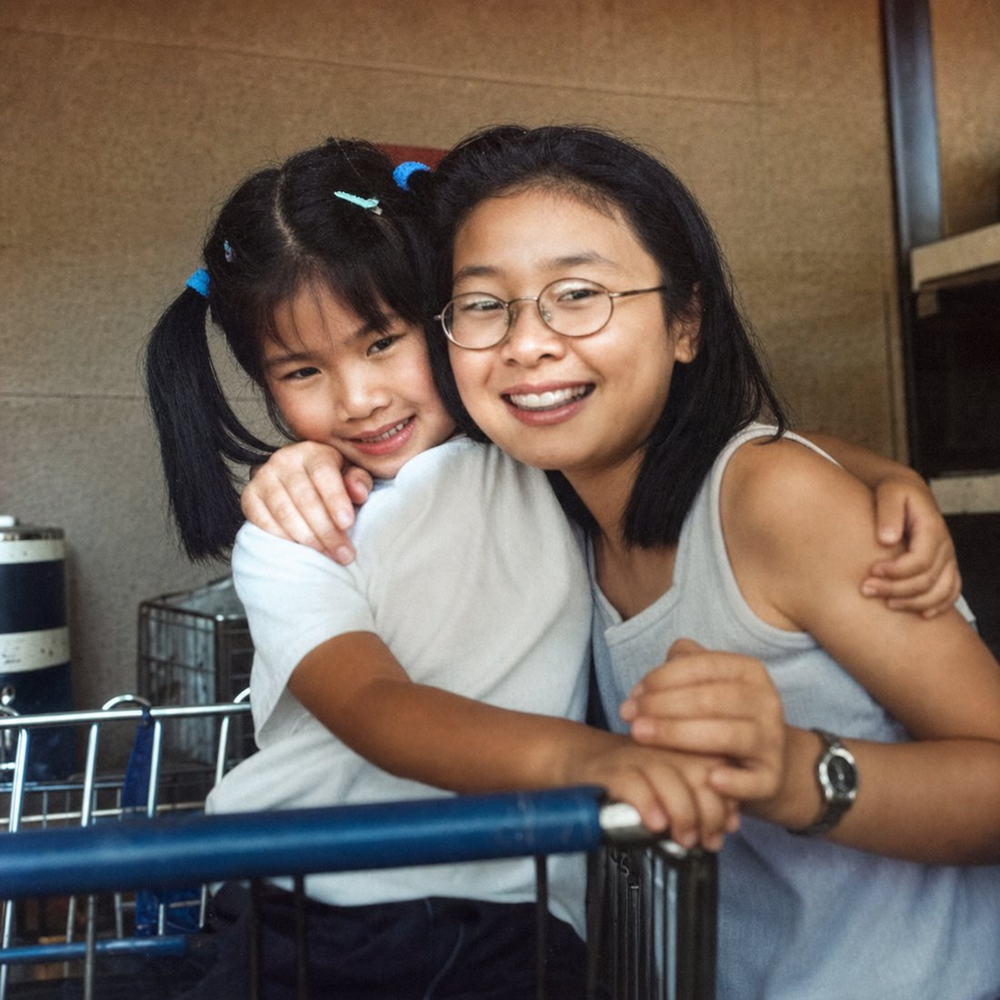
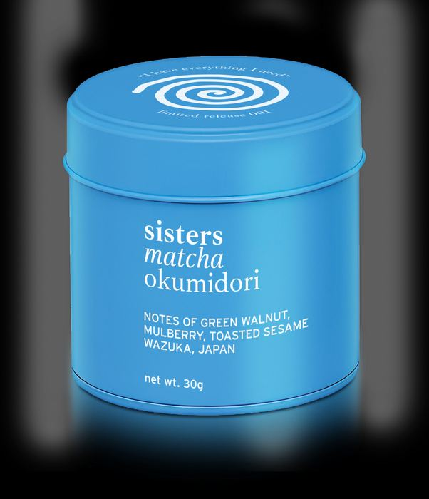

Product ritual
The existing blue tin becomes the hero in a grounded matcha preparation scene.
A calm editorial makeover using Sisters Matcha's own visual language: soft daylight, tactile surfaces, Wazuka origin cues, and the blue tin kept accurate.
Brand selected: Sisters Matcha · site: sistersmatcha.com · Instagram: @sisters.matcha
MAKEOVER GALLERY
The existing blue tin becomes the hero in a grounded matcha preparation scene.

A softer human frame that keeps the calm, reflective mood of the original portrait.

Origin art treated like a premium archival plate, not a decorative filler image.

Historical process imagery elevated with depth, warmth, and restrained texture.

The craft story becomes a quiet visual bridge between farm, ritual, and tin.

A gentle restoration pass for a personal origin image that still feels documentary.
BRAND STORY
The site assets suggest a brand built around sisters, family memory, and a direct line to Japanese tea craft. The makeover keeps that intimacy while giving the product photography enough polish for paid social, wholesale decks, and a premium landing page.
BEFORE / AFTER

PRIVATE PROOF